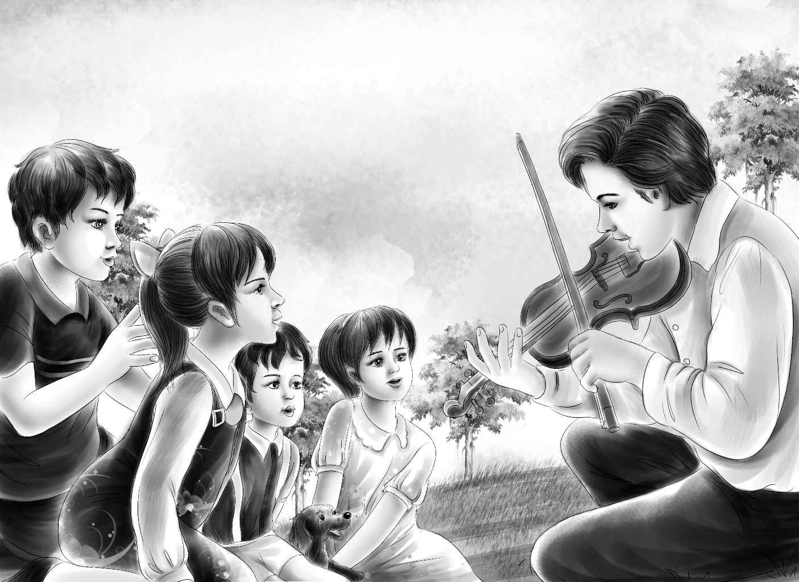

After supper，a few days later，the children sat resting in the doorway of the barn．
“Listen！”said Violet suddenly．
Since Violet never said anything suddenly，everyone looked at her in surprise and listened．Then they heard the sound of a violin．
“Who can that be？”asked Violet．
“Let’s find out，”said Henry．
Watch ran right to Captain Daniel’s hut and the four children followed．There sat Joe in the doorway，playing a real violin．He did not stop when he saw the children．They stared at him and watched his fingers fly as he played a very fast piece．When Joe finished，Benny said，“I didn’t know you had a violin．”
“Oh，please play it again！ When did you learn to play？”cried Violet．“Could I hold it just a minute？”
Jessie and Henry were too surprised to speak．This was not at all like Violet．When Joe handed the violin to her，Violet took it and put it under her chin．
“Play something，”said Joe．
“Oh，I can’t play it，”said Violet．“I’d just like to hold it a minute under my chin．Do you mind，Joe？”
“No！ No！”said Joe，“but don’t you want me to show you how to play it？”
“Not now，”said Violet．“You play some more．”She gave the violin back as if she had played one all her life．Joe did play some more，first a slow little piece，and then a faster one．

But Jessie and Henry were not watching Joe．They were watching Violet．She stood without moving all the time Joe was playing．
Joe was watching Violet，too．He was sure she could learn to play well，because she seemed to like the violin so much．
When the family went back to the barn at last，they were all thinking of Joe’s wonderful playing．That night，when Jessie went to sleep，it seemed to her that Joe played such a sad piece that Violet cried．But when Jessie woke up，she knew that it was real crying that she heard，for Violet was crying softly．Jessie got up at once．
“What is the matter？”she asked，falling on her knees beside Violet’s bed．“Why are you crying？”
“I-I w-want to learn to play the violin！”said Violet，starting to cry again．
“Of course you shall！”said Jessie．“I know Grand father will buy you a violin，and Joe can teach you how to play it．”
“It’s not that，”said Violet．“You see，I want to practice，and it’s so selfish to go off and practice all by myself when I ought to be helping——”
Henry came in with the flashlight．
“Oh，my goodness！”cried Jessie．“What can I say？ You talk to her，Henry！”
“I heard most of it，”said Henry．“She thinks she’s selfish to practice，when we came down here to have a good time together．Is that it？”
“That’s just it，”said Jessie．
“Now Violet，look here，”said Henry．“You couldn’t be selfish if you tried．We all want you to learn to play the violin．Most people don’t even like to practice，you know．”
Henry’s little talk with Violet made her feel better．Soon they were all talking again，and even laughing a little．
“Sh！”said Jessie．“We’d better be quiet，we don’t want to wake Benny．He would certainly howl．”
The children left Violet feeling happy again，and thinking about the little violin her grandfather would surely buy for her．
The next morning，Joe got Captain Daniel to telephone Mr．Alden．He listened to the story，and thought about his own beautiful violin carefully packed away．
But he said to Captain Daniel，“Certainly，Violet must have a violin．The only trouble is that I am too busy this morning to buy one for her．”
“Joe thinks he could pick one out，”said Captain Daniel．“His playing is just wonderful．”
“That Joe is a very interesting man，”replied Mr．Alden．“I’ll have a talk with him when I come over．Give him the money for the violin，Captain，and let him buy one if he thinks he can．”
When Joe came back to the Alden Island with the little violin，Violet was waiting for him on the dock．Joe was sure that Violet could some day be a wonderful player，so he had bought her a fine violin．
The rest of the family came flying down to see if Joe had had any luck．After they all had seen the violin，Violet shut the box．
“I don’t think it likes to be outdoors，”she said．
“I don’t think so，either，”agreed Joe．“Let’s take it to the hut，and I will give you your first lesson．”
“I’ll go with you，”said Benny．
“No，you had better stay on the dock with us and fish，”said Henry quickly．
“Are you going to fish？”asked Benny．
“Yes！”said Henry，who had not thought of fishing until that very minute．“Just think，Benny，we’ve been here by the ocean four weeks and we haven’t had a single fishing trip yet．”
Suddenly Henry found that he wanted to go fishing himself．
“You will find fishlines and bait in an old box under the dock，”called Joe．
Luck was surely with Henry．He baited a hook with a clam．Then he let down a long line and gave the end to Benny．Almost at once Benny began to yell and pull away on his line，hand over hand．
“Good！”cried Henry when Benny finally landed the fish on the dock．“What a wonderful fisherman you are，Benny！ Wait，I’ll take it off the hook for you，and put it on a string．”
“What a big one！”said Jessie．“Don’t catch many more of those，Benny，or we’ll be eating fish for a week．”
The children sat on the dock for a long time，but nothing happened．
“I wish I could catch one，”said Jessie．“Another fish like the one Benny caught and we would have enough for dinner．And I know just how to bake them with dressing．”
“I’m getting tired of this，”said Henry．“I’m going to stop．”
“I’m not，”said Benny．“My grandfather told me fishing takes lots of time．”
“He did take you fishing once，didn’t he？”said Henry．“I remember I wanted to go，but I had to do school work．”
“He told me that if I think I won’t catch a fish，then I will catch one for sure．And so when I do catch one，I am surprised，”said Benny．
“I see，”said Henry，sitting down again．He tied his own line to the dock．And because he really did not think he would get any fish，he looked out at the boats．Henry had just sat down when Benny shouted，“Hurry！ You’ve got a fish！ Don’t you see your line pull？”
Benny jumped for Henry’s line and before anyone could help him，he pulled in another fish just like the first one．
“Oh，Jessie！ Isn’t that something？ They are two twins，I guess！”
“I guess you are the fisherman of this family，all right，”said Henry．“You and Grandfather．I don’t even know when there is a fish on my own line．”
Henry put a string through the mouth of the other fish，and Benny carried them proudly home．
“Joe can clean them for me，”said Benny．
“Oh，I can do that！”said Henry．“I can clean fish，even if I can’t catch them．”
“Cut them in half，Henry，will you？”called Jessie．“I will go in and start the dressing．”
Benny would not leave his twin fishes even for a minute．After Henry had washed them，Benny brought them to Jessie，and stayed by her side while she put them in a pan．Jessie piled the dressing made of bread，onions，melted butter，and salt on four pieces of fish．
“I guess they will be good，”said Benny，as the oven door shut．He sat by the oven with the dog，until Jessie said that it was dinner time．
Violet came in．She put her violin carefully away，but she did not talk about her lesson．
“What do I smell？”she cried．
“It’s the twins，”said Benny．“They are in the oven baking．”
“Twins！”cried Violet．“What does he mean？”
Jessie opened the oven door and took out the pan to show her．
“They are done．We can each have half a fish，”she said．“And Benny shall have his first，because he caught them．”She put the fish carefully on four plates．
“I wish Grandfather could see us eating your fish，Benny，”said Henry．“You are a very good fisherman．”
“He’s coming to visit us tomorrow，”said Violet．“He telephoned to Captain Daniel and said he would be over tomorrow，if it was all right．”
“It’s all right with me，”cried Henry．
“And me，”said Jessie．“But what shall we have to eat？ I suppose we ought to have some meat for dinner．”
“I think Grandfather would like to eat just what we do，”said Violet．
“Maybe Grandfather and I could go fishing，”said Benny，“but we might not catch anything．”
“Grandfather won’t have time to go fishing，Benny，”said Henry．“Let’s have dinner from our own garden．Remember those little vegetables we had in the boxcar days，Benny？”
“Oh，yes，little vegetables with melted butter！”cried Benny．“Let’s have vegetables．”
“That’s a better idea．Then we’ll be sure to have some dinner，”said Jessie，laughing．